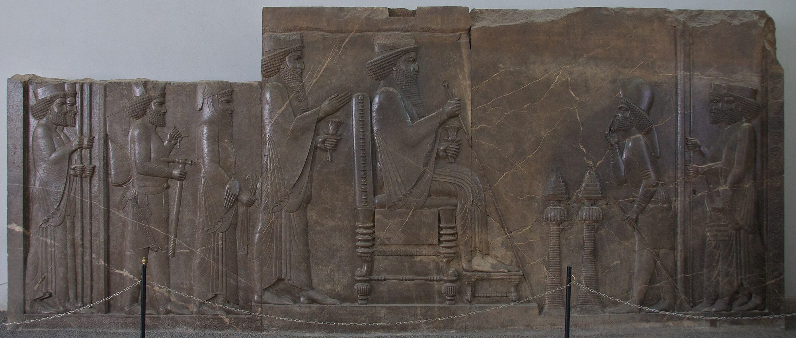
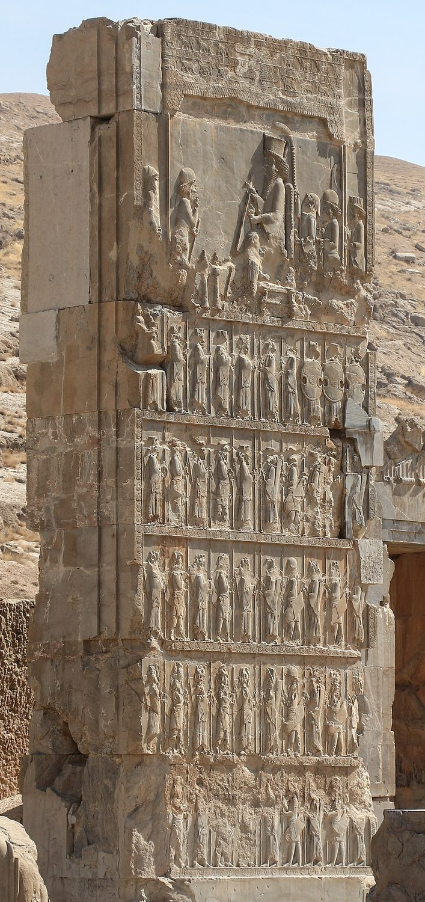
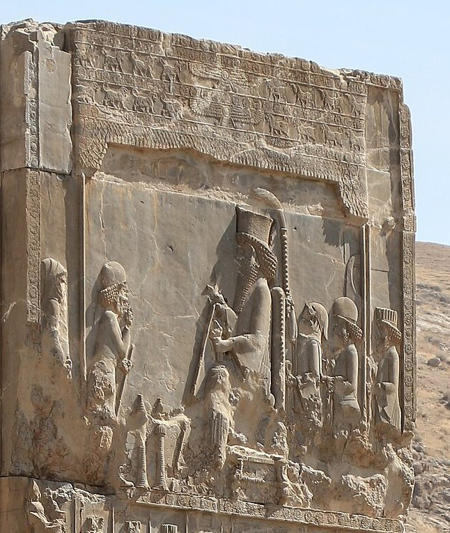

Unit 2 · Persepolis · Lesson 8
OVPRL workshop III: analysing site evidence
What is a carving in stone, or a text buried in gold, reliable for? And how do you say so in one strong paragraph?
Year 11 Ancient History · Present with → or space · Read on a phone with R

Connect · 3 minutes · everyone writes one line · press K for the timer
Name one thing that survives at Persepolis and one that does not, and why it matters
survives → does not survive → why it matters
The stone reliefs and column bases survive → the wooden roofs burned and most of the paint is gone → so the ruins look grey and bare, and every coloured picture of Persepolis is a reconstruction.
The king’s stone buildings, inscriptions and tablets survive → most of the city on the plain is still unexcavated → so we hear far more from the king and his officials than from ordinary people.
Today: the stone and metal that survive. What is a royal relief, or a text buried in gold, reliable for, and what is it not?
Learning intentions and success criteria · 2 minutes
Today’s goals
- Analyse archaeological sources from Persepolis using OVPRL
- Write an OVPRL paragraph on site evidence as connected prose
- complete a full OVPRL of a relief or inscription from the site
- explain what a relief is reliable for and what it is not
- write an OVPRL paragraph that uses provenance phrases, precise verbs and my own knowledge
Syllabus outcomes: AH-11-05 analyses different types of sources for evidence to support a historical account or argument · AH-11-06 explains differing interpretations and representations of the past · AH-11-07 communicates historical understanding, applying historical knowledge, terms and concepts. Life Skills: AH-LS-08 uses sources to form conclusions about the past · AH-LS-11 communicates information about the past using historical terms and concepts.
Note-making · the routine for the whole course
How to structure your notes
questions and key terms, written after
short phrases, arrows (→ leads to), abbreviations (c. = about; BCE = Before the Common Era)
- 1Rule up the page firstA cue column about a quarter of the page wide; title and date at the top; room for a summary at the bottom.
- 2Listen and look, then writeDon’t copy while a slide is being explained. Phrases, not sentences.
- 3Write your own notes at each ✎ checkpointThen compare with the model notes, one row at a time. Add what you missed in a second colour.
- 4Write the cue questions afterwardsUse exam verbs: explain, analyse, assess. To revise, cover your notes and answer the cues.
- 5Finish with a three-sentence summaryTwo checkpoints today: the Audience relief and the five moves · the foundation tablets (DPh). Your paragraph today is prose, not notes.
Key vocabulary · add to the unit word wall
Words for looking at, and writing about, site evidence
| The sources | Meaning |
|---|---|
| Relief | A carving that stands out from a flat stone background. |
| Apadana | The great columned audience hall of Persepolis, begun by Darius I. |
| Foundation tablet | An inscribed tablet buried in a building’s foundations, addressed to the gods and to future kings, not to visitors. |
| Trilingual inscription | An inscription written in three languages (at Persepolis usually Old Persian, Elamite and Babylonian). |
| canopy | A cloth awning held up above the king’s throne. |
| incense burner | A tall stand in which sweet-smelling incense was burned. |
| crown prince | The son chosen to be the next king. |
| jamb | The upright side of a doorway; at Persepolis, reliefs are carved on the jambs. |
| Writing moves | Meaning |
|---|---|
| provenance phrase | An opening phrase that says who made a source, when, where, and from what position. |
| relating verb | A verb that links a source to what it shows or does: presents … as, portrays, reveals. |
| own knowledge | What you know about a source that it does not tell you itself: where it stood, who saw it, what happened to it later. |
| nominalisation | Turning an action or quality into a noun: the king is raised above everyone → the king’s elevation. |
| evaluative modality | Words that show how sure a judgement is: may, probably, is likely to. |
| evaluative verb | A verb that judges a source precisely: idealises, omits, overstates, is corroborated by. |
1 · The Audience relief · supported reading — who made it, for where, and what happened to it?
Made for a stairway, found in a treasury
- What: one of two almost identical stone panels, each about 6.3 metres long, showing a king receiving an official
- Made: for the centre of the Apadana’s east and north stairways, in the late sixth or early fifth century BCE; the design probably goes back to Darius I, though the north stairway (where our panel stood) may be a little later than the east
- Moved: later taken off the stairways and set up in the Treasury, for reasons no one knows; plainer panels of soldiers took their place
- Found: in the Treasury in the 1930s by Erich Schmidt’s Chicago excavation; in 1939 he thought they had been made for the Treasury
- Now: the north panel is in the National Museum of Iran, Tehran (our photo); the east panel is still in the Treasury
Why does it matter for OVPRL that the panel was made for a stairway, not for the Treasury?
It changes Origin and Purpose. At the centre of a stairway up to the great audience hall, the panel was made to be seen by those coming to the king: public display, not the wall of a courtyard inside the Treasury, as Schmidt first thought. It also shows that an excavator’s first reading can change as evidence grows.
1 · The Audience relief · supported looking — annotate your copy: figures, gestures, objects, placement
Look closely: who is shown, doing what, and where?
Images: A. Davey (CC BY 2.0). Full details on the last slide.
What does the placement of the figures suggest?
Everything is arranged around the king: he alone sits, raised, at the centre; the official approaches past the incense, and the probable heir and the court stand behind him. The order suggests a ranked court with the king above it, which is what the panel was designed to show.
- 1The king on a high-backed throne, a staff in one hand and a flower in the other: the only figure seated
- 2A footstool: his feet do not touch the ground
- 3The figure behind the king, often identified as the crown prince: he too holds a flower, and raises a hand towards the throne
- 4Two incense burners between the king and his visitor
- 5An official with his hand raised to his mouth, a gesture of respect; his staff shows his rank
- 6Court attendants: one holds a folded cloth; the next carries the king’s bow case and battle-axe
- 7Guards with spears at both ends
- 8A canopy once spread above the throne; the top of the panel is lost, so only traces survive
2 · I do — modelling · watch the paragraph being written, and the choices behind it
One paragraph, written live
How useful is the Audience relief for understanding the Achaemenid royal court?
Verb how useful: a judgement of value for a stated purpose · Topic the Audience relief · Limits for understanding the Achaemenid royal court · Do one OVPRL paragraph, judged for that question, ending decisively.
One connected paragraph: Origin → Value → Purpose → Reliability → Limitations, then a decisive judgement. While you watch, note one choice the writer makes, and why.
How should it begin?
“This relief shows a king.” or a phrase that says where it was made for, when, and what happened to it?
A provenance phrase: “Carved for the centre of an Apadana stairway in the late sixth or early fifth century BCE, and later moved to the Treasury, …”
Which verb is accurate?
“The relief proves the king was all-powerful” or “The relief presents the king as …”?
Presents … as. The sculptors chose to seat him, raise him and centre him: we describe what the image does, not what it proves.
What do I know that the relief does not tell me?
Only what I can see, or where it stood and who saw it?
Own knowledge: it faced visitors climbing to the audience hall, and was later moved. That explains its purpose.
How should reliability be judged?
“The relief is reliable because it is primary.” or reliable for what?
For a question: reliable for how the court wished royal audience to be seen, not for any one real audience: the faces are not portraits.
2 · I do — a prepared model (Band 6 standard) and its five moves · one press per move
What a strong OVPRL paragraph on site evidence does
The five moves
Then a decisive last sentence that answers the inquiry question. No roadmap, no summary.
Make it weaker? Swap “presents the court as” for “proves”, or drop “probably”.
Notes checkpoint 1 of 2
The Audience relief and the five moves
3 · We do — your language bank · keep it open for the We do and the You do
Language bank: words that do the analysis
| Move | Use it to | Try |
|---|---|---|
| 1 · Provenance phrase | open with who made it, for which building, when, and where it is now | Carved for … in … · Set up in … on the orders of … · Buried beneath … when … · Found in … by … in … |
| 2 · Relating verb | say what the source does, not just what it shows | presents … as · portrays · depicts · elevates · associates … with |
| 3 · Own knowledge | bring in what the source cannot tell you | where it stood · who would see or read it · what happened to it later · what another source says |
| 4 · Nominalisation | pack an idea into a noun group, then build on it | is raised above everyone → the king’s elevation · claims the god gave it → this claim to divine favour |
| 5 · Modality and evaluative verbs | judge precisely: no more sure than the evidence | probably · suggests · is likely to · idealises · omits · overstates · reliable for … but not for … because … |
One sentence that does it all: The king’s elevation on a throne and footstool presents him as set apart from every other person at court, which suggests that the relief was designed to teach visitors their place. (a ‘This Does That’ sentence: evidence → precise verb → what it does)
3 · Inscriptions · We do — the source · read it together
A text buried in gold and silver: the Apadana foundation tablets
- What: four tablets, two of gold and two of silver, each carrying the same short text in Old Persian, Elamite and Babylonian
- Where: in stone boxes beneath the north-east and south-east corners of the Apadana’s inner hall; the two western deposits disappeared long ago
- Found: in 1933 by Friedrich Krefter, architect of Ernst Herzfeld’s expedition
Darius the great king, king of kings, king of countries, son of Hystaspes, an Achaemenid. King Darius says: This is the kingdom which I hold, from the Sacae who are beyond Sogdia to Kush, and from Sind to Lydia - [this is] what Ahuramazda, the greatest of gods, bestowed upon me. May Ahuramazda protect me and my royal house!
Issued in the name of Darius I (king 522–486 BCE) · the tablets were buried as work on the Apadana began · translation as published by Livius.org · Sacae = nomads of the Central Asian plains · Sogdia = the empire’s northernmost province · Kush = Nubia, south of Egypt · Sind = the Indus valley · Lydia = a land in western Turkey, capital Sardis
A text buried in the foundations, not meant for visitors to read: so what was its purpose?
Probably to speak to the gods and to future kings, not to Darius’s subjects: it asks Ahuramazda to protect Darius and his house, and tells any later king who opened the foundations who had laid them and what kingdom he held. Gold and silver show how much the deposit mattered.
3 · We do — joint construction · I scribe, you supply each move · vote 1 or 2 fingers on each choice
Our paragraph, part 1: Origin, Value, Purpose
Inquiry question: How useful are the Apadana foundation tablets (DPh) for understanding how Darius presented his kingship?
Provenance phrase: who, when, where, in what form?
Which is more precise: 1 · written by Darius · 2 · issued in Darius I’s name and buried beneath …?
Issued in the name of Darius I and buried in stone boxes beneath the north-east and south-east corners of the Apadana as work on the hall began, the four gold and silver foundation tablets carry one short royal text in Old Persian, Elamite and Babylonian.
Value: what can it tell us, for this question?
1 · lists places · 2 · reveals how Darius defined his kingdom?
Their value lies in revealing how Darius defined his realm: he claims to hold a kingdom ‘from the Sacae who are beyond Sogdia to Kush, and from Sind to Lydia’, naming the furthest peoples and lands he claimed to rule.
Purpose: a relating verb, then a nominalisation
1 · Darius says the god gave it to him · 2 · Darius presents his kingdom as …?
Darius presents this vast realm as ‘what Ahuramazda, the greatest of gods, bestowed upon me’; because the tablets were buried where no visitor could read them, this claim to divine favour was probably addressed to the gods and to future kings rather than to his subjects.
Audience check: who could read it, and who is missing?
Probably the gods and later kings who might open the foundations. Missing: the peoples of the lands it names, who have no voice in it.
3 · We do — joint construction · keep going
Our paragraph, part 2: Reliability and Limitations
Inquiry question: How useful are the Apadana foundation tablets (DPh) for understanding how Darius presented his kingship?
Reliability: modality and a precise evaluative verb
Does DPh 1 · prove how far Darius ruled, or 2 · claim it?
As evidence of Darius’s own claims, the tablets are highly reliable, since they were sealed beneath the hall as it was begun and are unlikely to have been changed for later readers; as evidence of how firmly he held each land, however, they are far weaker, because a list of the realm’s furthest places says nothing about control.
Limitations, and a precise judgement: reliable for … but not for … because …
1 · Darius was boasting · 2 · it is a royal claim, not a measurement?
DPh is therefore reliable evidence of how Darius wished his kingship to be understood by the gods and by the kings after him, but not of how his subjects experienced his rule, because it records only the king’s voice.
A decisive last sentence: answer the question
The tablets are thus invaluable as Darius’s own statement of a god-given kingdom reaching to the edges of his empire, but, on their own, they cannot show how firmly that kingdom was held.
Notes checkpoint 2 of 2
Inscriptions: the Apadana foundation tablets (DPh)
4 · You do · check first · hinge question · hold up A, B, C or D on “3, 2, 1, show”
Which sentence judges the reliability of the Audience relief most precisely?
- AThe relief is reliable evidence of what was said at one audience, but not of court dress, because it was carved at the time.
- BThe relief is reliable evidence of how the court wished audience to be seen, but not of any one real audience, because it is an idealised royal image.
- CThe relief is reliable evidence of how the court wished audience to be seen, but not of anything else, because royal art is propaganda and so useless.
- DThe relief is reliable evidence of exactly who served the king, but not of how he wished to be seen, because the faces are carved as portraits.
A reverses the two and assumes that carved at the time means true; a relief records no words at all. C treats propaganda as a dead end: the relief is still good evidence of dress, objects and royal ideology. D is wrong on the evidence: the faces are not portraits and the figures are not named.
4 · You do — your source · look first, then plan your five moves
An audience scene from the Hall of a Hundred Columns


Images: Bernard Gagnon (CC BY-SA 4.0). Full details on the last slide.
- Where: carved on one of the two north doorways of the Hall of a Hundred Columns (the Throne Hall), its front entrance, reached through a porch guarded by two great stone bulls; still in place at Persepolis
- The hall: begun under Xerxes and finished under Artaxerxes I, in the fifth century BCE
- Its use: probably a hall for receiving representatives of the subject peoples; at some point it also became a store room for treasure
- What you can see: at the top, the king enthroned under a canopy, an official before him with a hand raised to his mouth, two incense burners, and attendants behind the king; below, five rows of armed guards
- Repeated: the same audience scene, with its guards, is carved on the jambs of both north doorways
- Compare: the Audience relief (from the Apadana, which you looked at closely earlier) was probably the model for the top scene; every important figure appears again, except the one often identified as the crown prince
How useful is this relief for understanding Persian kingship?
Plan in the margin first: one word or phrase for each move. Then write.
4 · You do · 12 minutes · press K for the timer · your paragraph is collected
Write your OVPRL paragraph on the doorway relief
Verb how useful: value for a stated purpose · Topic the doorway relief · Limits for understanding Persian kingship · Do one OVPRL paragraph: provenance phrase → value → purpose → reliable for … not for … → a decisive judgement.
- Answer: How useful is this relief for understanding Persian kingship?
- One connected paragraph (Origin → Value → Purpose → Reliability → Limitations), with your own knowledge.
- Use two details the Audience relief lacks: the canopy, the five rows of guards, the bull-guarded porch, the scene on both doorways.
Carved on … in …, this relief … · Its value for understanding Persian kingship lies in … · The relief presents the king as … · Because it stood …, its purpose was probably … · It is reliable for … but not for … because … · It cannot tell us … · Overall, … Use the OVPRL routine on page 2 of your booklet.
Compare the Audience relief with DPh: which better reveals how Darius wanted his rule understood, and by whom?
Carved on one of the north doorways of the Hall of a Hundred Columns, the throne hall begun under Xerxes and finished under Artaxerxes I in the fifth century BCE, this relief is a royal image placed at the hall’s front entrance, where everyone coming through the bull-guarded porch would pass it. Its value for understanding Persian kingship lies in how it presents the king as the still centre of an ordered and well-guarded state: he sits enthroned beneath a canopy while an official approaches with a hand raised to his mouth, attendants stand behind him, and five rows of armed guards fill the space below. Because the hall was probably used to receive representatives of the subject peoples, this display of ceremony and armed power was likely meant to impress the visitors who walked past it. Such an idealised image, however, is reliable evidence of how the kings wished their power to be seen, but not of any particular audience, since the same scene is repeated on both north doorways and so shows a standard picture rather than one occasion. Nor can it show how the king governed from day to day: it depicts ceremony and protection, not administration. Ultimately, the relief is highly useful for understanding the ideology of Persian kingship, but only as the king’s own picture of a power that was both ceremonial and armed.
Finish your notes If time · or at home
Summary: three sentences
- What can a royal relief tell historians, and what can it not?
- Why were the Apadana foundation tablets buried, and what does that mean for their reliability?
- What makes an OVPRL paragraph on site evidence strong?
A royal relief such as the Audience relief is strong evidence of how the king wished his court to be seen, and of its dress and ceremonial objects, but it is an idealised image, not a record of any real audience. The Apadana foundation tablets (DPh) were buried beneath the corners of the hall, probably for the gods and future kings rather than for visitors, so they reveal Darius’s own claim to a god-given kingdom but not how firmly he ruled it. A strong OVPRL paragraph on site evidence opens with a provenance phrase, uses relating verbs and its own knowledge of where the source stood, and judges reliability for the question before ending decisively.
Check · 8 minutes · tick the class checklist · circle one to improve · then hand in your paragraph
Check your paragraph against the class checklist
Reliable for which question, and how do you know?
The doorway relief is reliable for how the kings wanted their power to be seen, as ceremony protected by rows of guards, because it is a royal image at the entrance of a royal hall; it is not reliable for any particular audience, because the same scene is repeated on both north doorways and shows a standard picture, not one occasion.
Circle the one criterion you will improve. Hand in your paragraph: next lesson you get back one strength and one next step, marked against this checklist. Then check yourself against today’s three “I can” statements.
Next lesson: the design and ornamentation of the Achaemenid period: where its styles came from, and why.
Practice and review · 1 of 3 · true, false, justify
True or false? Justify your answer
- 1The Audience relief was found where it was first set up. False — it was carved for the centre of an Apadana stairway and later moved to the Treasury, where it was found; no one knows why it was moved.
- 2The Apadana foundation tablets were placed where visitors could read them. False — they were buried in stone boxes beneath the corners of the hall, probably for the gods and future kings.
- 3The faces on the Audience relief are portraits of real people. False — they share one stereotyped profile, and the figures are not named.
- 4A royal relief can be reliable evidence even though it is propaganda. True — reliable for how the king wanted to be seen, and for dress and objects; not for real events.
- 5DPh proves exactly how far Darius’s power reached. False — it is the king’s claim, naming the furthest lands; it says nothing about how firmly each was held.
- 6“Presents … as” is a relating verb. True — it says what the source does, not just what it shows.
Practice and review · 2 of 3 · writing
Practise the moves
Rewrite each as a noun group that could start the next sentence: The king sits higher than everyone else. · Darius claimed that Ahuramazda gave him his kingdom.
The king’s elevation above everyone else … · Darius’s claim to a kingdom given by Ahuramazda …
Finish for DPh: It is reliable for … but not for … because …
DPh is reliable for how Darius wished his kingship to be understood, but not for how firmly he controlled the lands it names, because it is the king’s own claim, buried where no subject could read or answer it.
Present for what a source does, past for events: “The relief presented the king on his throne, and Schmidt’s team finds it in the Treasury in the 1930s.”
The relief presents the king on his throne, and Schmidt’s team found it in the Treasury in the 1930s. (A model, written for this lesson.)
Compare the Audience relief with DPh: which better reveals how Darius wanted his rule to be understood, and by whom (subjects, gods or future kings)?
Both sources present Darius’s rule as ordered and god-given, but they speak to different audiences. The Audience relief, whose design probably goes back to Darius, was made for the centre of an Apadana stairway to be seen: it showed everyone climbing to the audience hall a king seated above his court and approached with a gesture of respect, so it suggests how Darius wanted his subjects and the representatives of his empire to understand his rule. DPh, by contrast, was buried in gold and silver beneath the hall’s corners where no visitor could read it, so its claim to a kingdom ‘from the Sacae who are beyond Sogdia to Kush, and from Sind to Lydia’, given by Ahuramazda, was probably addressed to the gods and to future kings. The relief therefore probably better reveals how Darius wished to be seen by his subjects, while DPh better reveals how he wished to stand before the gods and the kings after him; together they show a kingship presented as both displayed on earth and approved in heaven.
Practice and review · 3 of 3 · cover your notes and answer from memory
Quick checks
- Describe what the Audience relief shows. A king seated on a throne, his feet on a footstool, receiving an official who raises his hand to his mouth; two incense burners between them; behind the king, a figure often identified as the crown prince, attendants and guards.
- Where was the Audience relief first set up, and where was it found? At the centre of an Apadana stairway; it was later moved to the Treasury, where Schmidt’s excavation found it in the 1930s.
- Why is the relief not a record of a real audience? It is an idealised image: the faces are not portraits, the figures are not named, and it shows how the court wished audience to be seen.
- What are the Apadana foundation tablets, and where were they found? Four tablets (two gold, two silver) carrying Darius I’s text DPh in three languages, found in 1933 in stone boxes beneath the north-east and south-east corners of the Apadana’s hall.
- For whom was DPh probably written, and how do we know? For the gods and future kings, not visitors: it was buried where no one could read it, and it asks Ahuramazda for protection.
- Name the five moves of a strong OVPRL paragraph on site evidence. Provenance phrase, relating verb, own knowledge, nominalisation, and modality with a judgement of reliability for the question; then a decisive last sentence.
Sources and credits
Where everything comes from
Darius I, the Apadana foundation tablets DPh: translation as published by Livius.org (Jona Lendering, after P. Lecoq, 1997). © Livius.org, quoted briefly.
Livius.org: Apadana, North Stairs, Central Relief, Apadana, Apadana East Stairs, Apadana North Stairs, Treasury, Hall of 100 Columns, Lower City; DPf and DPd (quoted in the teacher notes); the place-name glosses (Scythians/Sacae, Jaxartes, Nubia, Sardes, Darius’s travels).
Erich F. Schmidt, The Treasury of Persepolis and Other Discoveries in the Homeland of the Achaemenians (Oriental Institute Communications 21, University of Chicago Press, 1939), pp. vii, 2, 21–33, 97. Free from ISAC, University of Chicago (© University of Chicago, quoted briefly).
Classical Art Research Centre, University of Oxford: ‘The Apadana at Persepolis’ and ‘Apadana audience relief’ (cabinet.ox.ac.uk, read in the Internet Archive), © University of Oxford, quoted briefly. ISAC, Persepolis photographic archive, ‘The Throne Hall’ (Internet Archive copy), © University of Chicago, quoted briefly. Encyclopaedia Iranica, ‘Herzfeld, Ernst’ (search extract), © Encyclopaedia Iranica Foundation, quoted briefly.
Herodotus 3.97 (teacher notes): A. D. Godley’s translation (Loeb, 1920–22), as revised by the Perseus Digital Library (CC BY-SA 3.0 US).
The class checklist is Unit 1, Lesson 4’s. The model paragraphs, the class paragraph, the answers and the summary were written for this lesson.
Outcomes and content: NSW Education Standards Authority (NESA), Ancient History 11–12 Syllabus (2024). © NESA.
Teacher resources: Imperial Narratives in Stone, The Treasury and the Hall of a Hundred Columns, Why Darius Built Persepolis and the NSW Department of Education Persepolis slide deck (class notebook ‘Persepolis’), used as leads; every fact re-checked.
- The Audience relief (National Museum of Iran) · Photo: A. Davey · CC BY 2.0 · source
- Audience scene and guards, north doorway of the Hall of a Hundred Columns · Photo: Bernard Gagnon · CC BY-SA 4.0 · source
- Audience scene, north doorway of the Hall of a Hundred Columns (detail of the same photo) · Photo: Bernard Gagnon (cropped) · CC BY-SA 4.0 · source
_(4734172156).jpg){kind=link}

All photographs are openly licensed and were resized for the web (the doorway photograph was also cropped, twice). The two plans of the Apadana were drawn for this lesson (schematic, not to scale).